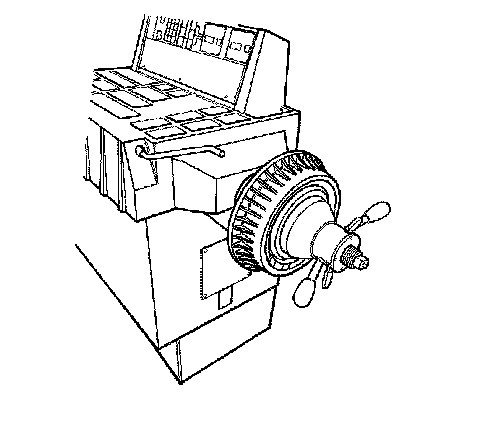

Brake Rotor/Drum Balance Inspection
Brake Rotor/Drum Balance Inspection
1. Support the vehicle drive axle on a suitable hoist. Refer to Lifting and Jacking the Vehicle .
2. Remove the tire and wheel assemblies from the drive axle. Refer to Tire and Wheel Removal and Installation .
Caution: Refer to Work Stall Test Caution .
3. Reinstall the wheel nuts in order to retain the brake rotors.
4. Run the vehicle at the concern speed while inspecting for the presence of the vibration.
Notice: Do not depress the brake pedal with the brake rotors and/or the brake drums removed, or with the brake calipers repositioned away from the brake rotors, or damage to the brake system may result.
5. If the vibration is still present, remove the rotors from the drive axle, then run the vehicle back to the concern speed.
6. If the vibration is eliminated when the brake rotors are removed from the drive axle, repeat the test with one rotor installed at a time. Replace the rotor that is causing or contributing to the vibration concern.

7. If a brake rotor was replaced as a result of following the previous steps, or if necessary to confirm the results obtained during the previous steps, and/or to check the non-drive axle components, perform the following:
1. Mount the brake rotor/drum on a balancer in the same manner as a tire and wheel assembly.
Important: Check brake rotors/drums for static imbalance only; ignore the dynamic imbalance readings.
2. Inspect the rotor/drum for static imbalance.
There is not a set tolerance for brake rotor/drum static imbalance. However, any brake rotor/drum measured in this same manner which is over 21 g (3/4 oz) may have the potential to cause or contribute to a vibration. Rotors/drums suspected of causing or contributing to a vibration should be replaced. Any rotor/drum that is replaced should be checked for imbalance in the same manner.